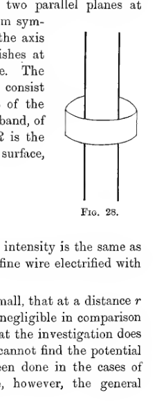
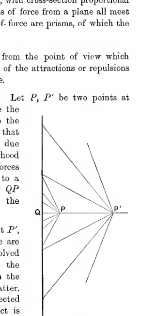
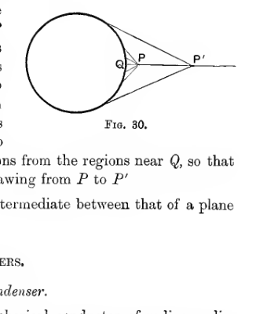
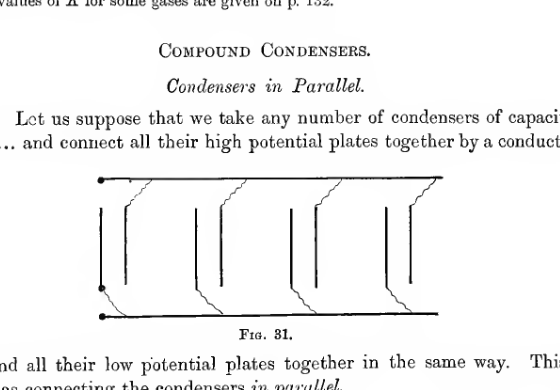
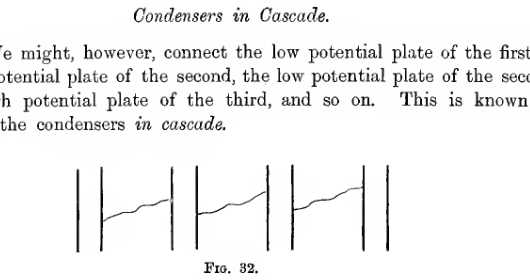
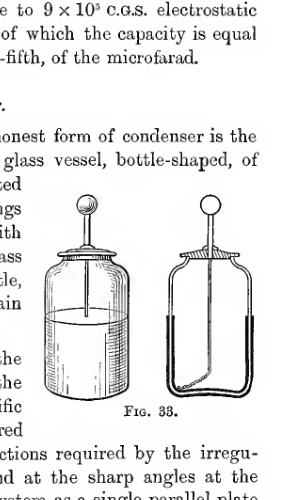
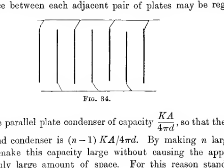
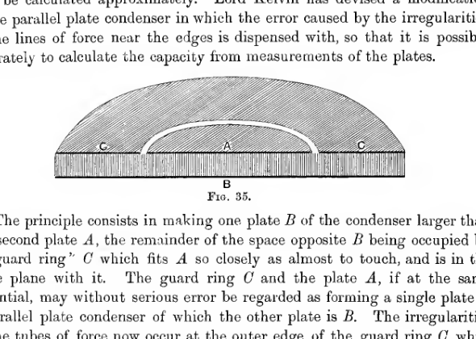
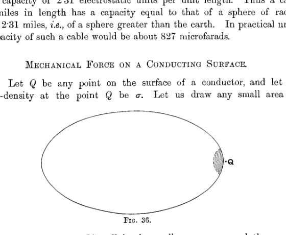
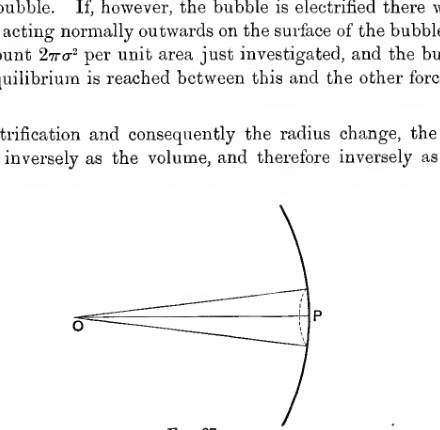

Chapter III#
Conductors and Condensers#
73. By a conductor, as previously explained, is meant any body or system of bodies, such that electricity can flow freely over the whole. When electricity is at rest on such a conductor, we have seen (\(\S 44\)) that the charge will reside entirely on the outer surface, and (\(\S 37\)) that the potential will be constant over this surface.
A conductor may be used for the storage of electricity, but it is found that a much more efficient arrangement is obtained by taking two or more conductors, generally thin plates of metal, and arranging them in a certain way. This arrangement for storing electricity is spoken of as a condenser. In the present Chapter we shall discuss the theory of single conductors and of condensers, working out in full the theory of some of the simpler cases.
Conductors#
A Spherical Conductor#
74. The simplest example of a conductor is supplied by a sphere, it being supposed that the sphere is so far removed from all other bodies that their influence may be neglected. In this case it is obvious from symmetry that the charge will spread itself uniformly over the surface. Thus if \(e\) is the charge, and \(a\) the radius, the surface density of \(\sigma\) is given by
The electric intensity at the surface being, as we have seen, equal to \(4\pi\sigma\), is \(e/a^2\).
From symmetry the direction of the intensity at any point outside the sphere must be in a direction passing through the centre. To find the amount of this intensity at a distance \(r\) from the centre, let us draw a sphere of radius \(r\), concentric with the conductor. At every point of this sphere the amount of the outward electric intensity is by symmetry the same, say \(R\), and its direction as we have seen is normal to the surface. Applying Gauss’ Theorem to this sphere, we find that the surface integral of normal intensity \(\iint N \, dS\) becomes simply \(R\) multiplied by the area of the surface \(4\pi r^2\), so that
or
This becomes \(e/a^2\) at the surface, agreeing with the value previously obtained.
Thus the electric force at any point is the same as if the charged sphere were replaced by a point charge \(e\), at the centre of the sphere. And, just as in the case of a single point charge \(e\), the potential at a point outside the sphere, distant \(r\) from its centre, is
so that at the surface of the sphere the potential is \(e/a\).
Inside the sphere, as has been proved in \(\S 37\), the potential is constant, and therefore equal to \(e/a\), its value at the surface, while the electric intensity vanishes.
As we gradually charge up the conductor, it appears that the potential at the surface is always proportional to the charge of the conductor.
It is customary to speak of the potential at the surface of a conductor as the potential of the conductor, and the ratio of the charge to this potential is defined to be the capacity of the conductor. From a general theorem which we shall soon arrive at, it will be seen that the ratio of charge to potential remains the same throughout the process of charging any conductor or condenser, so that in every case the capacity depends only on the shape and size of the conductor or condenser in question. For a sphere, as we have seen,
so that the capacity of a sphere is equal to its radius.
A Cylindrical Conductor#
75. Let us next consider the distribution of electricity on a circular cylinder, the cylinder either extending to infinity, or else having its ends so far away from the parts under consideration that their influence may be neglected.
As in the case of the sphere, the charge distributes itself symmetrically, so that if \(a\) is the radius of the cylinder, and if it has a charge \(e\) per unit length, we have
To find the intensity at any point outside the conductor construct a Gauss’ surface by first drawing a cylinder of radius \(r\), coaxial with the original cylinder, and then cutting off a unit length by two parallel planes at unit distance apart, perpendicular to the axis. From symmetry the force at every point is perpendicular to the axis of the cylinder, so that the normal intensity vanishes at every point of the plane ends of this Gauss’ surface. The surface integral of normal intensity will therefore consist entirely of the contributions from the curved part of the surface, and this curved part consists of a circular band, of unit width and radius \(r\), and therefore of area \(2\pi r\). If \(R\) is the outward intensity at every point of this curved surface, Gauss’ Theorem supplies the relation
so that
This, we notice, is independent of \(a\), so that the intensity is the same as it would be if \(a\) were very small, i.e. as if we had a fine wire electrified with a charge \(e\) per unit length.
In the foregoing, we must suppose \(r\) to be so small, that at a distance \(r\) from the cylinder the influence of the ends is still negligible in comparison with that of the nearer parts of the cylinder, so that the investigation does not hold for large values of \(r\). It follows that we cannot find the potential by integrating the intensity from infinity, as has been done in the cases of the point charge and of the sphere. We have, however, the general differential equation
so that in the present case, so long as \(r\) remains sufficiently small,
giving upon integration
The constant of integration \(C\) cannot be determined without a knowledge of the conditions at the ends of the cylinder. Thus for a long cylinder, the intensity at points near the cylinder is independent of the conditions at the ends, but the potential and capacity depend on these conditions, and are therefore not investigated here.

A long straight cylindrical conductor is shown passing through a coaxial cylindrical Gaussian surface shaped like a narrow band or sleeve around it. The sketch isolates a unit-length curved strip used to evaluate the flux around the charged cylinder.
An Infinite Plane#
76. Suppose we have a plane extending to infinity in all directions, and electrified with a charge \(\sigma\) per unit area. From symmetry it is obvious that the lines of force will be perpendicular to the plane at every point, so that the tubes of force will be of uniform cross-section. Let us take as Gauss’ surface the tube of force which has as cross-section any element \(\omega\) of area of the charged plane, this tube being closed by two cross-sections each of area \(\omega\) at distance \(r\) from the plane. If \(R\) is the intensity over either of these cross-sections the contribution of each cross-section to Gauss’ integral is \(R\omega\), so that Gauss’ Theorem gives at once
whence
The intensity is therefore the same at all distances from the plane.
The result that at the surface of the plane the intensity is \(2\pi\sigma\), may at first seem to be in opposition to Coulomb’s Theorem (\(\S 57\)) which states that the intensity at the surface of a conductor is \(4\pi\sigma\). It will, however, be seen from the proof of this theorem, that it deals only with conductors in which the conducting matter is of finite thickness; if we wish to regard the electrified plane as a conductor of this kind we must regard the total electrification as being divided between the two faces of the electrified plane, so that each face has only \(\tfrac12 \sigma\), and Coulomb’s Theorem then gives the correct result.
If the plane is not actually infinite, the result obtained for an infinite plane will hold within a region which is sufficiently near to the plane for the edges to have no influence. As in the former case of the cylinder, we can obtain the potential within this region by integration. If \(r\) measures the perpendicular distance from the plane,
so that
and, as before, the constant of integration cannot be determined without a knowledge of the conditions at the edges.
77. It is instructive to compare the three expressions which have been obtained for the electric intensity at points outside a charged sphere, cylinder and plane respectively. Taking \(r\) to be the distance from the centre of the sphere, from the axis of the cylinder, and from the plane, respectively, we have found that
Outside the sphere, \(R \propto \frac{1}{r^2}\).
Outside the cylinder, \(R \propto \frac{1}{r}\).
Outside the plane, \(R\) is constant.
From the point of view of tubes of force, these results are obvious enough deductions from the theorem that the intensity varies inversely as the cross-section of a tube of force. The lines of force from a sphere meet in a point, the centre of the sphere, so that the tubes of force are cones, with cross-section proportional to the square of the distance from the vertex. The lines of force from a cylinder all meet a line, the axis of the cylinder, at right angles, so that the tubes of force are wedges, with cross-section proportional to the distance from the axis. And the lines of force from a plane all meet the plane at right angles, so that the tubes of force are prisms, of which the cross-section is constant.
78. We may also examine the results from the point of view which regards the electric intensity as the resultant of the attractions or repulsions from different elements of the charged surface.
Let us first consider the charged plane. Let \(P, P'\) be two points at distances \(r, r'\) from the plane, and let \(Q\) be the foot of the perpendicular from either on to the plane. If \(P\) is near to \(Q\), it will be seen that almost the whole of the intensity at \(P\) is due to the charges in the immediate neighbourhood of \(Q\). The more distant parts contribute forces which make angles with \(QP\) nearly equal to a right angle, and after being resolved along \(QP\) these forces hardly contribute anything to the resultant intensity at \(P\).
Owing to the greater distance of the point \(P'\), the forces from given elements of the plane are smaller at \(P'\) than at \(P\), but have to be resolved through a smaller angle. The forces from the regions near \(Q\) are greatly diminished from the former cause and are hardly affected by the latter. The forces from remote regions are hardly affected by the former circumstance, but their effect is greatly increased by the latter. Thus on moving from \(P\) to \(P'\) the forces exerted by regions near \(Q\) decrease in efficiency, while those exerted by more remote regions gain. The result that the total resultant intensity is the same at \(P'\) as at \(P\), shews that the decrease of the one just balances the gain of the other.
If we replace the infinite plane by a sphere, we find that the force at a near point \(P\) is as before contributed almost entirely by the charges in the neighbourhood of \(Q\). On moving from \(P\) to \(P'\), these forces are diminished just as before, but the number of distant elements of area which now add contributions to the intensity at \(P'\) is much less than before. Thus the gain in the contributions from these elements does not suffice to balance the diminution in the contributions from the regions near \(Q\), so that the resultant intensity falls off on withdrawing from \(P\) to \(P'\).
The case of a cylinder is of course intermediate between that of a plane and that of a sphere.

A straight charged plane is drawn as a vertical line, with nearby points \(P\) and \(P'\) on one side and the foot \(Q\) on the plane. Rays from many elements of the plane converge toward \(P'\) and nearby elements toward \(P\), illustrating how local and distant contributions combine for a charged plane.

A sphere is shown at left with a near point \(P\) and a farther point \(P'\) on a radial line outside it. A marked surface point \(Q\) indicates the neighborhood whose contribution dominates at the nearer point, contrasting the spherical case with the infinite plane.
Condensers#
Spherical Condenser#
79. Suppose that we enclose the spherical conductor of radius \(a\) discussed in \(\S 74\), inside a second spherical conductor of internal radius \(b\), the two conductors being placed so as to be concentric and insulated from one another.
It again appears from symmetry that the intensity at every point must be in a direction passing through the common centre of the two spheres, and must be the same in amount at every point of any sphere concentric with the two conducting spheres. Let us imagine a concentric sphere of radius \(r\) drawn between the two conductors, and when the charge on the inner sphere is \(e\), let the intensity at every point of the imaginary sphere of radius \(r\) be \(R\). Then, as before, Gauss’ Theorem, applied to the sphere of radius \(r\), gives the relation
so that
This only holds for values of \(r\) intermediate between \(a\) and \(b\), so that to obtain the potential we cannot integrate from infinity, but must use the differential equation. This is
which upon integration gives
We can determine the constant of integration as soon as we know the potential of either of the spheres. Suppose for instance that the outer sphere is put to earth so that \(V = 0\) over the sphere \(r = b\), then we obtain at once from equation (27)
so that \(C = -e/b\), and equation (27) becomes
On taking \(r = a\), we find that the potential of the inner sphere is \(e\left(\frac{1}{a} - \frac{1}{b}\right)\), and its charge is \(e\), so that the capacity of the condenser is
80. In the more general case in which the outer sphere is not put to earth, let us suppose that \(V_a, V_b\) are the potentials of the two spheres of radii \(a\) and \(b\), so that, from equation (27),
Then we have on subtraction
so that the capacity is
The lines of force which start from the inner sphere must all end on the inner surface of the outer sphere, and each line of force has equal and opposite charges at its two ends. Thus if the charge on the inner sphere is \(e\), that on the inner surface of the outer sphere must be \(-e\). We can therefore regard the capacity of the condenser as being the charge on either of the two spheres divided by the difference of potential, the fraction being taken always positive. On this view, however, we leave out of account any charge which there may be on the outer surface of the outer sphere: this is not regarded as part of the charge of the condenser.
An examination of the expression for the capacity,
will shew that it can be made as large as we please by making \(b-a\) sufficiently small. This explains why a condenser is so much more efficient for the storage of electricity than a single conductor.
81. By taking more than two spheres we can form more complicated condensers. Suppose, for instance, we take concentric spheres of radii \(a, b, c\) in ascending order of magnitude, and connect both the spheres of radii \(a\) and \(c\) to earth, that of radius \(b\) remaining insulated. Let \(V\) be the potential of the middle sphere, and let \(e_1\) and \(e_2\) be the total charges on its inner and outer surfaces. Regarding the inner surface of the middle sphere and the surface of the innermost sphere as forming a single spherical condenser, we have
and again regarding the outer surface of the middle sphere and the outermost sphere as forming a second spherical condenser, we have
Hence the total charge \(E\) of the middle sheet is given by
so that regarded as a single condenser, the system of three spheres has a capacity
which is equal to the sum of the capacities of the two constituent condensers into which we have resolved the system. This is a special case of a general theorem to be given later (\(\S 85\)).
Coaxial Cylinders#
82. A conducting circular cylinder of radius \(a\) surrounded by a second coaxial cylinder of internal radius \(b\) will form a condenser. If \(e\) is the charge on the inner cylinder per unit length, and if \(V\) is the potential at any point between the two cylinders at a distance \(r\) from their common axis, we have, as in \(\S 75\),
and it is now possible to determine the constant \(C\) as soon as the potential of either cylinder is known.
Let \(V_a, V_b\) be the potentials of the inner and outer cylinders, so that
By subtraction
so that the capacity is
per unit length.
Parallel Plate Condenser#
83. This condenser consists of two parallel plates facing one another, say at distance \(d\) apart. Lines of force will pass from the inner face of one to the inner face of the other, and in regions sufficiently far removed from the edges of the plates the lines of force will be perpendicular to the plate throughout their length. If one of the plates is electrified to a surface density \(\sigma\), that of the other will have surface density \(-\sigma\). Since the cross-section of a tube of force remains the same throughout its length, and since the electric intensity varies as the cross-section, it follows that the electric intensity must be the same throughout the whole length of a tube, and this, by Coulomb’s Theorem, will be \(4\pi\sigma\), its value at the surface of either plate. Hence the difference of potential between the two plates, obtained by integrating the intensity along a line of force, will be
The capacity per unit area is equal to the charge per unit area \(\sigma\) divided by this difference of potential, and is therefore
The capacity of a condenser formed of two parallel plates, each of area \(A\), is therefore
except for a correction required by the irregularities in the lines of force near the edges of the plates.
Inductive Capacity#
84. It was found by Cavendish, and afterwards independently by Faraday, that the capacity of a condenser depends not only on the shape and size of the conducting plates but also on the nature of the insulating material, or dielectric to use Faraday’s word, by which they are separated.
It is further found that on replacing air by some other dielectric, the capacity of a condenser is altered in a ratio which is independent of the shape and size of the condenser, and which depends only on the dielectric itself. This constant ratio is called the specific inductive capacity of the dielectric, the inductive capacity of air being taken to be unity.
We shall discuss the theory of dielectrics in a later Chapter. At present it will be enough to know that if \(C\) is the capacity of a condenser when its plates are separated by air, then if the space between the plates of the condenser is filled with a dielectric of inductive capacity \(K\) the particular dielectric used, the capacity when its plates are separated by any dielectric, will be \(KC\).
The following table will give some idea of the values of \(K\) actually observed for different dielectrics. For a great many substances the value of \(K\) is found to vary widely for different specimens of the material and for different physical conditions.
Substance |
\(K\) |
|---|---|
Sulphur |
\(2.8\) to \(4.0\) |
Mica |
\(6.0\) to \(8.0\) |
Glass |
\(6.6\) to \(9.9\) |
Paraffin |
\(2.0\) to \(2.3\) |
Ebonite |
\(2.0\) to \(3.15\) |
Water |
\(75\) to \(81\) |
Ice at \(-23^\circ\) |
\(78.0\) |
Ice at \(-185^\circ\) |
\(2.4\) to \(2.9\) |
The values of \(K\) for some gases are given on p. 132.
Compound Condensers#
Condensers in Parallel#
85. Let us suppose that we take any number of condensers of capacities \(C_1, C_2, \ldots\) and connect all their high potential plates together by a conducting wire, and all their low potential plates together in the same way. This is known as connecting the condensers in parallel.
The high potential plates have now all the same potential, say \(V_1\), while the low potential plates have all the same potential, say \(V_0\). If \(e_1, e_2, \ldots\) are the charges on the separate high potential plates, we have
etc., and the total charge \(E\) is given by
Thus the system of condensers behaves like a single condenser of capacity
It will be noticed that the compound condenser discussed in \(\S 81\) consisted virtually of two simple spherical condensers connected in parallel.

Several condensers are shown with all upper plates connected by one common wire and all lower plates by another, representing a bank of separate condensers wired in parallel so that each shares the same potential difference.
Condensers in Cascade#
86. We might, however, connect the low potential plate of the first to the high potential plate of the second, the low potential plate of the second to the high potential plate of the third, and so on. This is known as arranging the condensers in cascade.
Suppose that the high potential plate of the first has a charge \(e\). This induces a charge \(-e\) on the low potential plate, and since this plate together with the high potential plate of the second condenser now form a single insulated conductor, there must be a charge \(+e\) on the high potential plate of the second condenser. This induces a charge \(-e\) on the low potential plate of the second, and so on indefinitely; each high potential plate will have a charge \(+e\), each low potential plate a charge \(-e\).
Thus the difference of potential of the two plates of the first condenser will be \(e/C_1\), that of the second condenser will be \(e/C_2\), and so on, so that the total fall of potential from the high potential plate of the first to the low potential plate of the last will be
We see that the arrangement acts like a single condenser of capacity

A sequence of condensers is drawn in series, with the low-potential plate of one joined to the high-potential plate of the next. The chained wiring illustrates a cascade or series arrangement across several plate pairs.
Practical Condensers#
Practical Units#
87. As will be explained more fully later, the practical units of electricians are entirely different from the theoretical units in which we have so far supposed measurements to be made. The practical unit of capacity is called the farad, and is equal, very approximately, to \(9 \times 10^{11}\) times the theoretical C.G.S. electrostatic unit, i.e. is equal to the actual capacity of a sphere of radius \(9 \times 10^{11}\) cms. This unit is too large for most purposes, so that it is convenient to introduce a subsidiary unit, the microfarad, equal to a millionth of the farad, and therefore to \(9 \times 10^5\) C.G.S. electrostatic units. Standard condensers can be obtained of which the capacity is equal to a given fraction, frequently one-third or one-fifth, of the microfarad.
The Leyden Jar#
88. For experimental purposes the commonest form of condenser is the Leyden Jar. This consists essentially of a glass vessel, bottle-shaped, of which the greater part of the surface is coated inside and outside with tinfoil. The two coatings form the two plates of the condenser, contact with the inner coating being established by a brass rod which comes through the neck of the bottle, the lower end having attached to it a chain which rests on the inner coating of tinfoil.
To form a rough numerical estimate of the capacity of a Leyden Jar, let us suppose that the thickness of the glass is \(\tfrac12\) cm., that its specific inductive capacity is \(7\), and that the area covered with tinfoil is \(400\) sq. cms. Neglecting corrections required by the irregularities in the lines of force at the edges and at the sharp angles at the bottom of the jar, and regarding the whole system as a single parallel plate condenser, we obtain as an approximate value for the capacity
electrostatic units, in which we must put \(K = 7\), \(A = 400\) and \(d = \tfrac12\). On substituting these values the capacity is found to be approximately \(450\) electrostatic units, or about \(\tfrac{1}{2000}\) microfarad.

Two forms of Leyden jar are sketched side by side: at left a bottle-shaped jar with inner and outer coatings and a metal knob on a rod, and at right a sectional or simplified form showing the conducting coatings and central rod more clearly.
Parallel Plates#
89. A more convenient condenser for some purposes is a modification of the parallel plate condenser. Let us suppose that we arrange \(n\) plates, each of area \(A\), parallel to one another, the distance between any two adjacent plates being \(d\). If alternate plates are joined together so as to be in electrical contact the space between each adjacent pair of plates may be regarded as forming a single parallel plate condenser of capacity \(KA/4\pi d\), so that the capacity of the compound condenser is \((n-1)KA/4\pi d\). By making \(n\) large and \(d\) small, we can make this capacity large without causing the apparatus to occupy an unduly large amount of space. For this reason standard condensers are usually made of this pattern.

A stack of several narrow parallel plates is shown with alternate plates connected together at opposite ends. The repeated spacing indicates how many adjacent plate gaps act as multiple parallel condensers within a compact arrangement.
Guard Ring#
90. In both the condensers described the capacity can only be calculated approximately. Lord Kelvin has devised a modification of the parallel plate condenser in which the error caused by the irregularities of the lines of force near the edges is dispensed with, so that it is possible accurately to calculate the capacity from measurements of the plates.
The principle consists in making one plate \(B\) of the condenser larger than the second plate \(A\), the remainder of the space opposite \(B\) being occupied by a guard ring \(C\) which fits \(A\) so closely as almost to touch, and is in the same plane with it. The guard ring \(C\) and the plate \(A\), if at the same potential, may without serious error be regarded as forming a single plate of a parallel plate condenser of which the other plate is \(B\). The irregularities in the tubes of force now occur at the outer edge of the guard ring \(C\), while the lines of force from \(A\) to \(B\) are perfectly straight and uniform. Thus if \(A\) is the area of the plate \(A\) its capacity may be supposed, with great accuracy, to be
where \(d\) is the distance between the plates \(A\) and \(B\).

The guard-ring arrangement is shown in section: a central circular plate \(A\) lies flush within a surrounding annular guard ring \(C\), both opposite a larger lower plate \(B\). The geometry emphasizes how fringing is pushed outward to the ring’s outer edge.
Submarine Cables#
91. Unfortunately for practical electricians, a submarine cable forms a condenser, of which the capacity is frequently very considerable. The effect of this upon the transmission of signals will be discussed later. A cable consists generally of a core of strands of copper wire surrounded by a layer of insulating material, the whole being enclosed in a sheathing of iron wire. This arrangement acts as a condenser of the type of the coaxial cylinders investigated in \(\S 82\), the core forming the inner cylinder whilst the iron sheathing and the sea outside form the outer cylinder.
In the capacity formula obtained in \(\S 82\), namely
let us suppose that \(b = 2a\), and that \(K = 3.2\), this being about the value for the insulating material generally used. Using the value \(\log_e 2 = 0.69315\), we find a capacity of \(2.31\) electrostatic units per unit length. Thus a cable \(2000\) miles in length has a capacity equal to that of a sphere of radius \(2000 \times 2.31\) miles, i.e. of a sphere greater than the earth. In practical units, the capacity of such a cable would be about \(827\) microfarads.
Mechanical Force on a Conducting Surface#
92. Let \(Q\) be any point on the surface of a conductor, and let the surface-density at the point \(Q\) be \(\sigma\). Let us draw any small area \(dS\) enclosing \(Q\). By taking \(dS\) sufficiently small, we may regard the area as perfectly plane, and the charge on the area will be \(\sigma dS\). The electricity on the remainder of the conductor will exert forces of attraction or repulsion on the charge \(\sigma dS\), and these forces will shew themselves as a mechanical force acting on the element of area \(dS\) of the conductor. We require to find the amount of this mechanical force.
The electric intensity at a point near \(Q\) and just outside the conductor is \(4\pi\sigma\), by Coulomb’s Law, and its direction is normally away from the surface. Of this intensity, part arises from the charge on \(dS\) itself, and part from the charges on the remainder of the conductor. As regards the first part, which arises from the charge on \(dS\) itself, we may notice that when we are considering a point sufficiently close to the surface, the element \(dS\) may be treated as an infinite electrified plane, the electrification being of uniform density \(\sigma\). The intensity arising from the electrification of \(dS\) at such a point is accordingly an intensity \(2\pi\sigma\) normally away from the surface. Since the total intensity is necessarily made up from the intensities due to the element itself and to the remainder of the conductor, the forces due to the electricity on \(dS\) and due to the remainder must from the condition of equilibrium be equal and opposite. The element \(dS\) is therefore pushed normally outward by the rest of the conductor with a force per unit area \(2\pi\sigma^2\). Action and reaction being equal and opposite, it follows that there is a mechanical force \(2\pi\sigma^2\) per unit area acting normally outwards on the material surface of the conductor.
Remembering that \(R = 4\pi\sigma\), we find that the mechanical force can also be expressed as
per unit area.
93. Let us try to form some estimate of the magnitude of this mechanical force as compared with other mechanical forces with which we are more familiar. We have already mentioned Maxwell’s estimate that a gramme of gold, beaten into a gold-leaf one square metre in area, can hold a charge of \(60,000\) electrostatic units. This gives \(3\) units per square centimetre as the charge on each face, giving for the intensity at the surface,
and for the mechanical force,
Lord Kelvin, however, found that air was capable of sustaining a tension of \(9600\) grains wt. per sq. foot, or about \(700\) dynes per sq. cm. This gives \(R = 130\), \(\sigma = 10\).
Taking \(R = 100\) as a large value of \(R\), we find \(\frac{R^2}{8\pi} = 400\) dynes per sq. cm. The pressure of a normal atmosphere is
so that the force on the conducting surface would be only about \(\tfrac{1}{2500}\) of an atmosphere, say \(3\) mm. of mercury.
If a gold-leaf is beaten so thin that \(1\) gm. occupies \(1\) sq. metre of area, the weight of this is only \(0.0981\) dyne per sq. cm. In order that \(2\pi\sigma^2\) may be equal to this, we must have \(\sigma = 0.1249\). Thus a small piece of gold-leaf would be lifted up from a charged surface on which it rested as soon as the surface acquired a charge of about \(\tfrac18\) of a unit per sq. cm.

A conductor is drawn in section as a broad closed curve, with a small shaded surface element at the point \(Q\) and area \(dS\) marked near the boundary. The diagram isolates the tiny charged patch used in discussing the outward mechanical pressure on a conductor.
Electrified Soap-Bubble#
94. As has already been said, this mechanical force shews itself well on electrifying a soap-bubble.
Let us first suppose a closed soap-bubble blown, of radius \(a\). If the atmospheric pressure is \(\Pi\), the pressure inside will be somewhat greater than \(\Pi\), the resulting outward force being just balanced by the tension of the surface of the bubble. If, however, the bubble is electrified there will be an additional force acting normally outwards on the surface of the bubble, namely the force amounting to \(2\pi\sigma^2\) per unit area just investigated, and the bubble will expand until equilibrium is reached between this and the other forces acting on the surface.
As the electrification and consequently the radius change, the pressure inside will vary inversely as the volume, and therefore inversely as \(a^3\). Let us, then, suppose the pressure to be \(\kappa/a^3\). Consider the equilibrium of the small element of surface cut off by a circular cone through the centre, of small semi-vertical angle \(\theta\). This element is a circle of radius \(a\theta\), and therefore of area \(\pi a^2 \theta^2\). The forces acting are:
The atmospheric pressure \(\Pi\pi a^2 \theta^2\) normally inwards.
The internal pressure \(\frac{\kappa}{a^3}\pi a^2\theta^2\) normally outwards.
The mechanical force due to electrification, \(2\pi\sigma^2 \times \pi a^2\theta^2\) normally outwards.
The system of tensions acting in the surface of the bubble across the boundary of the element.
If \(T\) is the tension per unit length, the tension across any element of length \(ds\) of the small circle will be \(Tds\) acting at an angle \(\theta\) with the tangent plane at \(P\), the centre of the circle. This may be resolved into \(Tds\cos\theta\) in the tangent plane, and \(Tds\sin\theta\) along \(PO\). Combining the forces all round the small circle of circumference \(2\pi a\theta\), we find that the components in the tangent plane destroy one another, while those along \(PO\) combine into a resultant \(2\pi a\theta T\sin\theta\). To a sufficient approximation this may be written as \(2\pi a\theta^2 T\).
The equation of equilibrium of the element of area is accordingly
or, simplifying,
Let \(a_0\) be the radius when the bubble is uncharged, and let the radius be \(a_1\) when the bubble has a charge \(e\), so that
Then
We can without serious error assume \(T\) to be the same in the two cases. If we eliminate \(T\) from these two equations, we obtain
giving the charge in terms of the radii in the charged and uncharged states.

A small cone from the bubble’s centre \(O\) cuts off a circular cap at a point \(P\) on the spherical surface. The drawing shows the conical element used to balance atmospheric pressure, internal pressure, electrical pressure, and surface tension on a soap-bubble.
95. We have seen (\(\S 93\)) that the maximum pressure on the surface which electrification can produce is only about \(\tfrac{1}{2500}\) atmosphere: thus it is not possible for electrification to enhance the pressure inside by more than about \(\tfrac{1}{2500}\) atmosphere, so that the increase in the size of the bubble is necessarily very slight.
If, however, the bubble is blown on a tube which is open to the air, equation (28) becomes
As a rough approximation, we may still regard the bubble as a uniformly charged sphere, so that if \(V\) is its potential,
and the relation is
giving \(V\) in terms of the radius of the bubble, if the tension \(T\) is known. In this case the electrification can be made to produce a large change in the radius, by using films for which \(T\) is very small.
Energy#
Energy of Discharge#
96. On discharging a conductor or condenser, a certain amount of energy is set free. This may shew itself in various ways, e.g. as a spark or sound (as in lightning and thunder), the heating of a wire, or the piercing of a hole through a solid dielectric. The energy thus liberated has been previously stored up in charging the conductor or condenser.
To calculate the amount of this energy, let us suppose that one plate of a condenser is to earth, and that the other plate has a charge \(e\) and is at potential \(V\), so that if \(C\) is the capacity of the condenser,
If we bring up an additional charge \(de\) from infinity, the work to be done is, in accordance with the definition of potential, \(Vde\). This is equal to \(dW\), where \(W\) denotes the total work done in charging the condenser up to this stage, so that
by equation (29).
On integration we obtain
no constant of integration being added since \(W\) must vanish when \(e = 0\). This expression gives the work done in charging a condenser, and therefore gives also the energy of discharge, which may be used in creating a spark, in heating a wire, etc.
Clearly an exactly similar investigation will apply to a single conductor, so that expression (30) gives the energy either of a condenser or of a single conductor. Using the relation \(e = CV\), the energy may be expressed in any of the forms
97. As an example of the use of this formula, let us suppose that we have a parallel plate condenser, the area of each plate being \(A\), and the distance of the plates being \(d\), so that \(C = A/4\pi d\), by \(\S 83\). Let \(\sigma\) be the surface density of the high potential plate, so that \(e = \sigma A\). Let the low potential plate be at zero potential, then the potential of the high potential plate is
and the electrical energy is
Now let us pull the plates apart, so that \(d\) is increased to \(d'\). The electrical energy is now \(2\pi d'\sigma^2 A\), so that there has been an increase of electrical energy of amount
It is easy to see that this exactly represents the work done in separating the two plates. The mechanical force on either plate is \(2\pi\sigma^2\) per unit area, so that the total mechanical force on a plate is \(2\pi\sigma^2 A\). Obviously, then, the above is the work done in separating the plates through a distance \(d' - d\).
It appears from this that a parallel plate condenser affords a ready means of obtaining electrical energy at the expense of mechanical. A more valuable property of such a condenser is that it enables us to increase an initial difference of potential.
The initial difference of potential
is increased, by the separation, to
By taking \(d\) small and \(d'\) large, an initial small difference of potential may be multiplied almost indefinitely, and a potential difference which is too small to observe may be increased until it is sufficiently great to affect an instrument. By making use of this principle, Volta first succeeded in detecting the difference of electrostatic potential between the two terminals of an electric battery.
References#
Maxwell. Electricity and Magnetism. Chapter VIII.
Cavendish. Electrical Researches. Experiments on the charges of bodies, \(\S\S 236\)-\(294\).
Examples#
The two plates of a parallel plate condenser are each of area \(A\), and the distance between them is \(d\), this distance being small compared with the size of the plates. Find the attraction between them when charged to potential difference \(V\), neglecting the irregularities caused by the edges of the plates. Find also the energy set free when the plates are connected by a wire.
A sheet of metal of thickness \(t\) is introduced between the two plates of a parallel plate condenser which are at a distance \(d\) apart, and is placed so as to be parallel to the plates. Shew that the capacity of the condenser is increased by an amount
per unit area. Examine the case in which \(t\) is very nearly equal to \(d\).
A high-pressure main consists first of a central conductor, which is a copper tube of inner and outer diameters of \(\tfrac{9}{16}\) and \(\tfrac{13}{16}\) inches. The outer conductor is a second copper tube concentric with the first, from which it is separated by insulating material, and of diameters \(1\tfrac{17}{32}\) and \(1\tfrac{15}{16}\) inches. Outside this is more insulating material, and enclosing the whole is an iron tube of internal diameter \(2\tfrac{1}{16}\) inches. The capacity of the conductor is found to be \(0.367\) microfarad per mile: calculate the inductive capacity of the insulating material.
If an infinite plane is charged to surface density \(\sigma\), and \(P\) is a point distant half an inch from the plane. Shew that of the total intensity \(2\pi\sigma\) at \(P\), half is due to the charges at points which are within one inch of \(P\), and half to the charges beyond.
A disc of vulcanite (non-conducting), of radius \(5\) inches, is charged to a uniform surface density \(\sigma\) by friction. Find the electric intensities at points on the axis of the disc distant respectively \(1\), \(3\), \(5\), \(7\) inches from the surface.
A condenser consists of a sphere of radius \(a\) surrounded by a concentric spherical shell of radius \(b\). The inner sphere is put to earth and the outer shell is insulated. Shew that the capacity of the condenser so formed is
Four equal large conducting plates \(A, B, C, D\) are fixed parallel to one another. \(A\) and \(D\) are connected to earth, \(B\) has a charge \(E'\) per unit area, and \(C\) a charge \(E''\) per unit area. The distance between \(A\) and \(B\) is \(a\), between \(B\) and \(C\) is \(b\), and between \(C\) and \(D\) is \(c\). Find the potentials of \(B\) and \(C\).
A circular gold-leaf of radius \(b\) is laid on the surface of a charged conducting sphere of radius \(a\), \(a\) being large compared to \(b\). Prove that the loss of electrical energy in removing the leaf from the conductor, assuming that it carries away its whole charge, is approximately \(\tfrac14 b^2 E^2/a^3\), where \(E\) is the charge of the conductor, and the capacity of the leaf is comparable to \(b\).
Two condensers of capacities \(C_1\) and \(C_2\), and possessing initially charges \(Q_1\) and \(Q_2\), are connected in parallel. Shew that there is a loss of energy of amount
Two Leyden Jars \(A, B\) have capacities \(C_1, C_2\) respectively. \(A\) is charged and a spark taken; it is then charged as before and a spark passed between the knobs of \(A\) and \(B\). \(A\) and \(B\) are then separated and are each discharged by a spark. Shew that the energies of the four sparks are in the ratio
Assuming an adequate number of condensers of equal capacity \(C\), shew how a compound condenser can be formed of equivalent capacity \(\theta C\), where \(\theta\) is any rational number.
Three insulated concentric spherical conductors, whose radii in ascending order of magnitude are \(a, b, c\), have charges \(e_1, e_2, e_3\) respectively, find their potentials and shew that if the innermost sphere be connected to earth the potential of the outermost is diminished by
A conducting sphere of radius \(a\) is surrounded by two thin concentric conducting shells of radii \(b\) and \(c\), the intervening spaces being filled with dielectrics of inductive capacities \(K\) and \(L\) respectively. If the shell \(b\) receives a charge \(E\), the other two being uncharged, determine the loss of energy and the potential at any point when the spheres \(A\) and \(C\) are connected by a wire.
Three thin conducting sheets are in the form of concentric spheres of radii \(a+d\), \(a\), \(a-c\) respectively. The dielectric between the outer and middle sheet is of inductive capacity \(K\), that between the middle and inner sheet is air. At first the outer sheet is uninsulated, the inner sheet is uncharged and insulated, and the middle sheet is charged to potential \(V\) and insulated. The inner sheet is now uninsulated without connection with the middle sheet. Prove that the potential of the middle sheet falls to
Two insulated conductors \(A\) and \(B\) are geometrically similar, the ratio of their linear dimensions being as \(L\) to \(L'\). The conductors are placed so as to be out of each other’s field of induction. The potential of \(A\) is \(V\) and its charge is \(E\), the potential of \(B\) is \(V'\) and its charge is \(E'\). The conductors are then connected by a thin wire. Prove that, after electrostatic equilibrium has been restored, the loss of electrostatic energy is
If two surfaces be taken in any family of equipotentials in free space, and two metal conductors formed so as to occupy their positions, then the capacity of the condenser thus formed is
where \(C_1, C_2\) are the capacities of the external and internal conductors when existing alone in an infinite field.
A conductor \(B\) with one internal cavity of radius \(b\) is kept at potential \(U\). A conducting sphere \(A\), of radius \(a\), at great height above \(B\) contains in a cavity water which leaks down to a very thin wire passing without contact to the cavity of \(B\) through a hole in the top of \(B\). At the end of the wire spherical drops are formed, concentric with the cavity; and, when of radius \(d\), they fall passing without contact through a small hole in the bottom of \(B\), and are received in a cavity of a third conductor \(C\) of capacity \(c\) at a great distance below \(B\). Initially, before leaking commences, the conductors \(A\) and \(C\) are uncharged. Prove that after the \(r\)th drop has fallen the potential of \(C\) is
where the disturbing effect of the wire and hole on the capacities is neglected.
An insulated spherical conductor, formed of two hemispherical shells in contact, whose inner and outer radii are \(b\) and \(b'\), has within it a concentric spherical conductor of radius \(a\), and without it another spherical conductor of which the internal radius is \(c\). These two conductors are earth-connected and the middle one receives a charge. Shew that the two shells will not separate if
Outside a spherical charged conductor there is a concentric insulated but uncharged conducting spherical shell, which consists of two segments. Prove that the two segments will not separate if the distance of the separating plane from the centre is less than
where \(a, b\) are the internal and external radii of the shell.
A soap-bubble of radius \(a\) is formed by a film of tension \(T'\), the external atmospheric pressure being \(\Pi\). The bubble is touched by a wire from a large conductor at potential \(V\), and the film is an electrical conductor. Prove that its radius increases to \(r\), given by
If the radius and tension of a spherical soap-bubble be \(a\) and \(T\) respectively, shew that the charge of electricity required to expand the bubble to twice its linear dimensions would be
A thin spherical conducting envelope, of tension \(T'\) for all magnitudes of its radius, and with no air inside or outside, is insulated and charged with a quantity \(Q\) of electricity. Prove that the total gain in mechanical energy involved in bringing a charge \(q\) from infinity and placing it on the envelope, which both initially and finally is in mechanical equilibrium, is
A spherical soap-bubble is blown inside another concentric with it, and the former has a charge \(E\) of electricity, the latter being originally uncharged. The latter is now a small charge given to it. Shew that if \(a\) and \(2a\) were the original radii, the new radii will be approximately \(a+x\), \(2a+y\), where
where \(\Pi\) is the atmospheric pressure, and \(T\) is the surface-tension of each bubble.
Shew that the electrical capacity of a conductor is less than that of any other conductor which can completely surround it.
If the inner sphere of a concentric spherical condenser is moved slightly out of position, so that the two spheres are no longer concentric, shew that the capacity is increased.